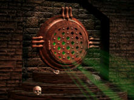
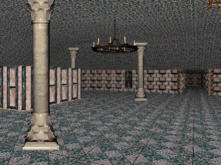
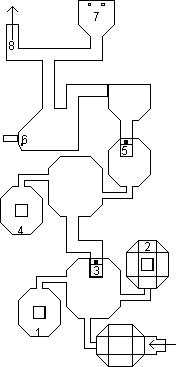

| 1. | Switch #1, releases a few flying eyes. |
| 2. | Switch #2, releases a few flying eyes. |
| 3. | Wall opens if switch #1 and #2 are pressed. The switch on top of the stone table can be pressed but its function is unknown to me. If you touch the blue ground infront of it, the button will become unpressed again. |
| 4. | Switch |
| 5. | Switch with same behaviour as described above in #3. |
| 6. | Empty chest, some eye monsters will come from the little passage if you go near the chest. |
| 7. | Agar himself, easy to kill, but protected with some eyes. You find a scroll in the left most chest. |
| 8. | Exit from the dungeon. |
Leave us a message at: mgrounds@hotmail.com